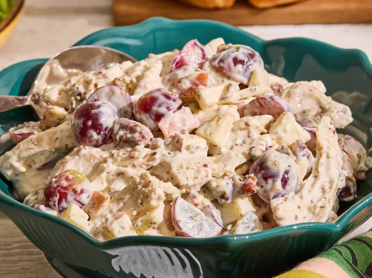

Nancy Chicken Salad
Home

Description
This Copycat Fancy Nancy Chicken Salad brings the Chicken Salad Chick favorite home with its signature creamy, sweet,
fruity, and crunchy combination. Made with red grapes, Fuji apple, and pecans, it’s great on a croissant or over
lettuce.
Ingredients
- 1/2 cup light mayonnaise
- 1 teaspoon Dijon mustard
- 1/2 teaspoon apple cider vinegar
- 1 teaspoon agave syrup or honey
- 1/4 teaspoon garlic powder
- 1/4 teaspoon dried dill
- 1/4 teaspoon dried parsley
- 1/4 teaspoon onion powder
- salt and freshly ground black pepper to taste
- milk, as needed, optional
Chicken Salad
- 2 cups finely chopped cooked chicken
- 1/2 cup red seedless grapes, halved
- 1/2 cup 1/4-inch-diced Fuji apple
- 1/4 cup chopped toasted pecan halves
Steps
- Combine mayonnaise, Dijon, vinegar, agave, garlic powder, dill, parsley, and onion powder in a bowl. Mix well and
refrigerate while preparing the salad. If dressing looks too thick, thin it out with milk, 1 teaspoon at a time.
- Chop chicken until finely diced (or pulse in a food proccessor), measuring out 2 cups, set aside. Rinse and dry grapes
and then slice in half. Lightly toast pecans in a skillet over medium heat. Allow to cool and roughly chop.
- Fold chicken, diced apple, grapes, and pecans into the dressing. Serve on croissants or on lettuce leaves.